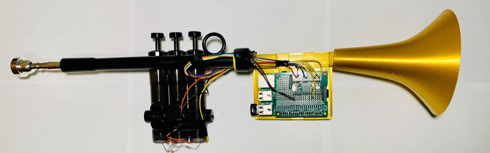
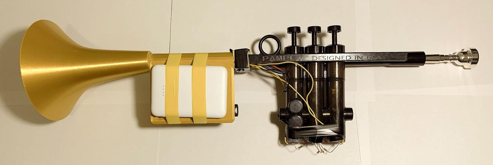
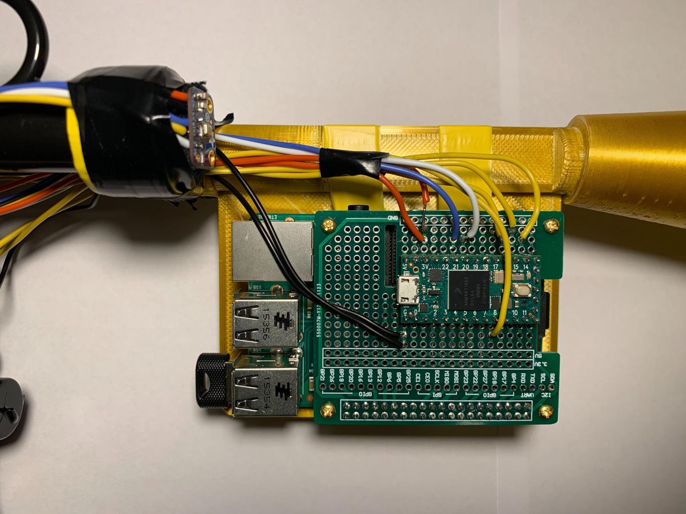
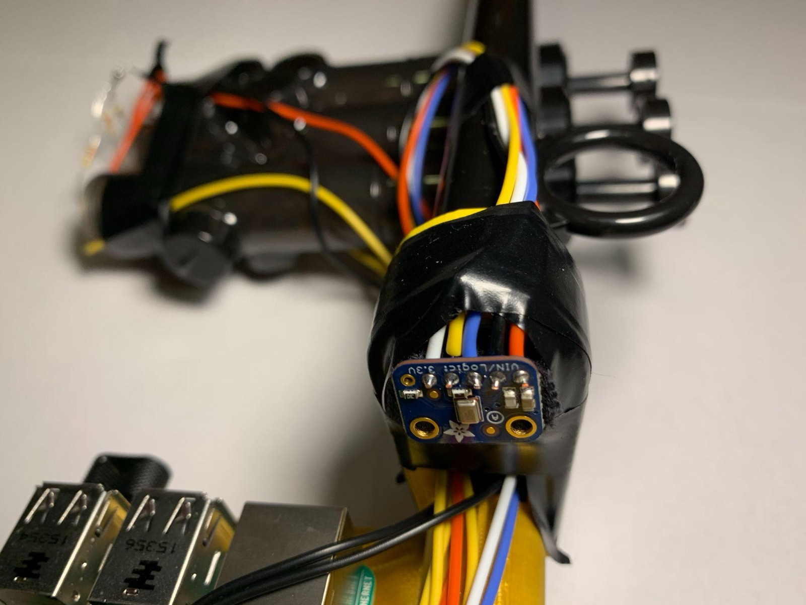
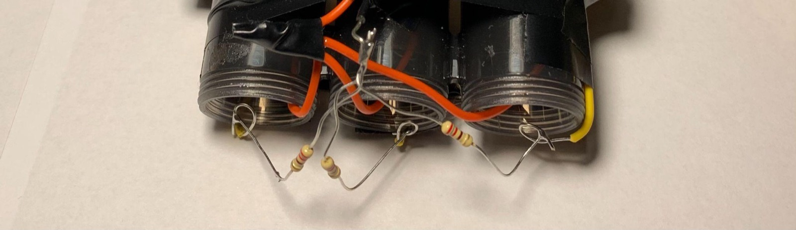
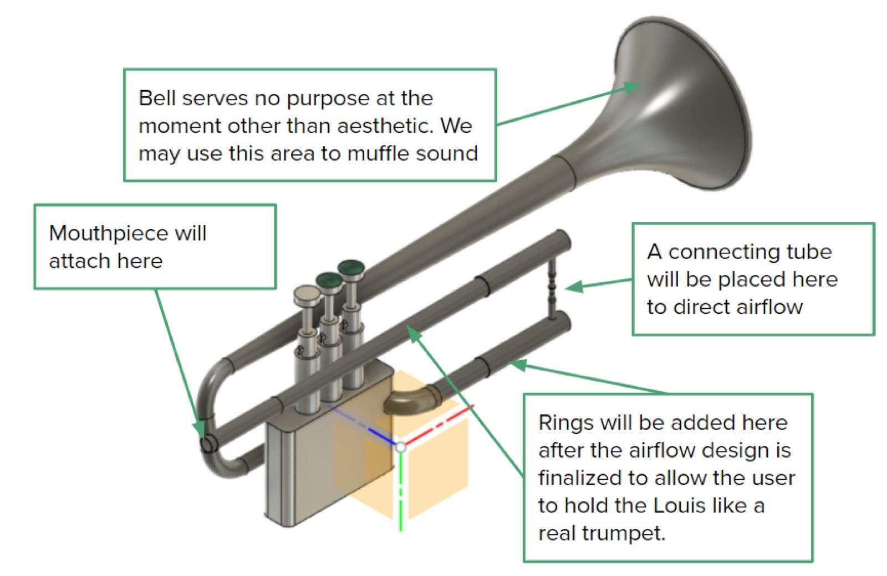

The Louis: MIDI Trumpet
An affordable MIDI trumpet built to look, feel and sound like the real thing, so remote-learning students could practice without the cost or noise of an actual trumpet.
Real valve springs and mouthpiece, a 3D-printed body, an I2S mic reading the mouthpiece buzz, valve sensors, and a Raspberry Pi + Teensy for signal processing, all for under $150 in parts.
Inspired by David Baylies' Stella electronic trumpet. Our note-detection code builds on his open-source Stella code, and David advised us directly during development.
Senior capstone at Brown (ENGN 1001), April 2021.
Read the full write-up (32-page PDF) → Design, signal processing, testing and what we'd change.





